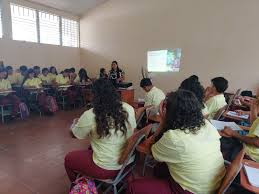

Un técnico en informática se encarga de la instalación, mantenimiento y reparación de hardware,
software y redes, brindando soporte técnico en empresas o de manera independiente. Sus funciones
incluyen la gestión de sistemas, resolución de problemas y seguridad informática básica. Puede
trabajar como soporte técnico, administrador de redes o especialista en ciberseguridad con
especialización. Para mejorar sus oportunidades laborales, es recomendable obtener
certificaciones como CompTIA A+, Cisco CCNA o Google IT Support. Se puede estudiar en
institutos, universidades o con cursos online, combinando teoría con práctica en entornos reales
y virtualizados. 🚀
救냭쮻e qué trata la informática?
La informática abarca múltiples áreas, entre ellas:
 Equipo :
Equipo :
Software : Programa
Programación
Bases de datos:Organización
Redes y Comunicaciones:Código
Seguridad Informática : Pr
Un técnico en Contaduría y Finanzas se encarga de la gestión y control de los recursos
económicos de una empresa, llevando registros contables, elaborando estados financieros y
analizando presupuestos. Sus funciones incluyen la administración de impuestos, costos y
auditoría básica, asegurando el cumplimiento de normativas contables y fiscales. Puede trabajar
en empresas, bancos, despachos contables o como independiente. Para mejorar sus oportunidades,
es recomendable dominar herramientas como Excel, SAP, QuickBooks y conocer normativas como NIIF
y normas fiscales locales. La formación puede obtenerse en institutos técnicos, universidades o
cursos especializados en finanzas y contabilidad. 💰📊
救냭쮻e qué trata la Contaduria y Finanzas?

La Contaduría y Finanzas es una disciplina que se encarga de la gestión y control de los
recursos económicos de una empresa, organización o persona
Contaduría: Se enfoca en el registro, análisis e interpretación de la información
financiera.
Los contadores elaboran estados financieros, llevan la contabilidad fiscal y tributaria, y
aseguran el cumplimiento de normativas contables como las NIIF (Normas Internacionales de
Información Financiera)
Finanzas: Se ocupa de la administración del dinero, la planificación de inversiones, el
control de costos y la toma de decisiones estratégicas para mejorar la rentabilidad. Incluye la
gestión de presupuestos, evaluación de riesgos y mercados financieros
La Agroindustria es el sector que transforma materias primas agrícolas, pecuarias y forestales
en productos con mayor valor agregado, combinando procesos industriales con la producción del
campo. Incluye actividades como el procesamiento de alimentos, la biotecnología, la gestión de
cadenas de suministro y la comercialización de productos agropecuarios. Su objetivo es mejorar
la eficiencia, sostenibilidad y competitividad del sector agrícola, contribuyendo al desarrollo
económico y la seguridad alimentaria. Además, integra innovaciones tecnológicas y prácticas
sostenibles para optimizar la producción y minimizar el impacto ambiental. 🌱🚜
救냭쮻e qué trata la Agroindustria?
La
Agroindustria es la actividad económica que combina la producción agrícola con procesos
industriales para transformar materias primas del campo en productos elaborados o
semielaborados. Incluye sectores como la producción de alimentos, bebidas, biocombustibles,
textiles y otros derivados agrícolas. Su objetivo es agregar valor a los productos del campo
mediante tecnología, optimización de procesos y estrategias de comercialización, impulsando el
desarrollo económico y la sostenibilidad del sector agrícola. Además, la agroindustria juega un
papel clave en la seguridad alimentaria y el abastecimiento de insumos esenciales para diversas
industrias.